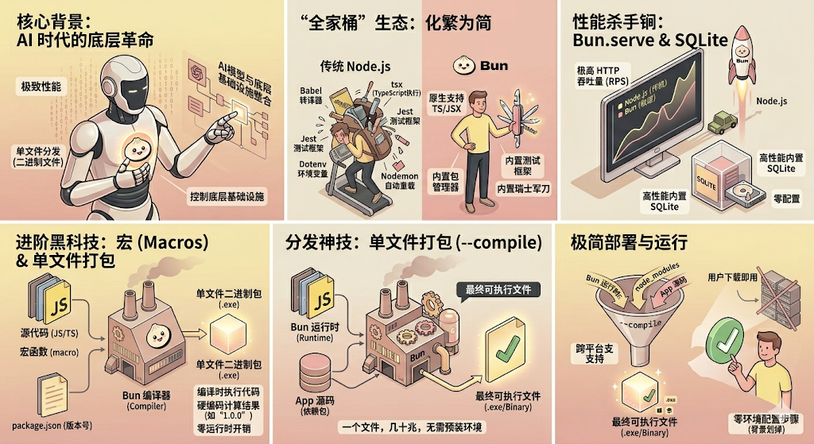

Bun Course · JS Runtime
运行时、包管理器、测试框架、打包器、Shell、SQLite，全都内置。

01 · 背景
AI 编程工具让“模型 → 代码 → 执行 → 反馈”的循环变得极高频。
运行时启动速度、依赖安装速度、单文件分发能力，都会直接影响 Agent 产品体验。
AI Agent 需要频繁执行代码、跑测试、安装依赖。
Bun 可以把 JS/TS 项目编译成单个可执行文件。
核心产品越依赖运行时，越需要控制底层稳定性和性能。
02 · 认知模型
直接运行 JS / TS / JSX / TSX
兼容 npm 生态，安装更快
构建、打包、编译成二进制
测试、Shell、SQLite、Web API
03 · 安装
curl -fsSL https://bun.sh/install | bashpowershell -c "irm bun.sh/install.ps1 | iex"npm install -g bunbun --version04 · 直接运行 TypeScript
ts-node 或 tsxbun index.ts
bun component.tsx
bun --hot server.tstsconfig.json 仍然有用，但更多用于类型检查和编辑器体验。05 · 包管理
bun installbun add axiosbun add -d @types/bunbun run devBun 兼容 node_modules 结构，同时使用自己的锁文件来提升读取和安装速度。
06 · CLI 工具箱
默认读取 .env，直接用 process.env 或 Bun.env。
Bun.file() 返回懒加载文件对象，写入用 Bun.write()。
原生支持 fetch、Request、Response、WebSocket。
# .env
PORT=3000
API_KEY=fengfeng_666
// index.ts
console.log(process.env.PORT);
console.log(Bun.env.API_KEY);07 · 文件 API
const file = Bun.file("input.txt");
const text = await file.text();
const arrayBuffer = await file.arrayBuffer();
await Bun.write("output.txt", "这是 Teacher Fengfeng 写入的新内容");
const response = await fetch("https://example.com");
await Bun.write("website.html", response);
export {}; // 让编辑器把文件视为 ESM，避免顶层 await 报红08 · HTTP 服务
Bun.serve({
port: 3000,
fetch(req) {
return new Response("Welcome to Bun!");
},
});
// 热重载
bun --hot index.ts修改代码后服务快速更新，不需要手动重启。
通过 tls 字段传入 key、cert、ca。
配置 hostname、maxRequestBodySize、reusePort。
09 · 路由
const router = new Bun.FileSystemRouter({
style: "nextjs",
dir: "./pages",
});
Bun.serve({
fetch(req) {
const match = router.match(req);
if (match) {
return import(match.filePath)
.then(mod => mod.default(req, match));
}
return new Response("404", { status: 404 });
},
});import { Elysia } from "elysia";
new Elysia()
.get("/", () => "首页")
.get("/user/:id", ({ params: { id } }) => `用户ID: ${id}`)
.post("/upload", ({ body }) => ({ status: "success" }))
.listen(3000);10 · 数据、测试、脚本
import { Database } from "bun:sqlite";
const db = new Database(":memory:");
const query = db.query("SELECT 'Hello Bun!' as message");
console.log(query.get());import { expect, test } from "bun:test";
test("sum", () => {
expect(1 + 1).toBe(2);
});
bun testimport { $ } from "bun";
await $`mkdir -p new_folder`;
const files = await $`ls`.text();
console.log(files);11 · 分发与进阶
bun build ./index.ts --compile --outfile my-app把 Bun 运行时、你的代码、依赖一起打进可执行文件。
import { getVersion } from "./utils.ts" with { type: "macro" };
console.log(getVersion());
// 编译后直接变成 "1.0.0"CLI 工具、AI Agent、内部运维工具、桌面辅助脚本、无需用户预装 Node/Bun 的分发包。
12 · 交互式示例
13 · 总结
课堂练习：用 Bun 写一个带路由、文件读写、测试和单文件打包的小 CLI/API。